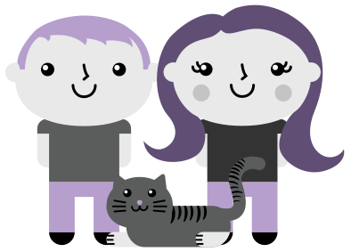

Chad Donald
Katharine Marie
Sherman
& McCutcheon
Chad Donald
Katharine Marie
She was an elementary education major. He was a communications major. They were a part of a large group of friends at Indiana University of Pennsylvania, but they were aquaintances at best. In the late spring of 2007, however, their friends graduated and moved away.

Summer came quickly and he moved into an apartment at 1313 Church Street in Indiana with a friend. He would start his Master's program that fall. She was a townie and couldn't leave. She had just finished school and was searching for a job as an elementary school teacher.
They grew close that summer. At first, they hung out because no one else was around. It soon developed into a close relationship. On July 1, 2007, they started dating!

Late that summer, she got a job as a kindergarten teacher! He started collecting more student debt.
He moved (again) and finished his Master's degree in Adult Education. Envious of his second diploma, she started towards her Master's degree in literacy.
Continuing the trend, he moved again. And because there are no jobs for people with Master's degrees, he enrolled in a doctoral program. For the next three years, he was poor and unable to afford a ring. She, on the other hand saved up and bought a brand new car.
In the summer of 2011, she finished her Master's degree and he became a doctor! Better yet, he had a professorship awaiting him in the fall.
Together, they adopted a five-month old kitten. They named her Eva after the girl robot in Wall-E. Later that year, he began his job as a professor.
Because he finally had a paycheck that could sustain human-life, they went on a Mexican vacation with their college friends. One morning, he suggested they watch the sunrise over the Caribbean.
After his nerves settled, he got down on one knee and asked her to be his wife. Her first response was, "Oh my God, what?" She was clearly shocked but...
She said yes!!!
On their way back to the hotel, they even saw a rainbow! The day couldn't get any more perfect (even if his awful sunburn healed instantly).
After five years of waiting, she finally got to call her parents and tell them the big news.
Now, it is time to celebrate their I do's on July 13, 2013.